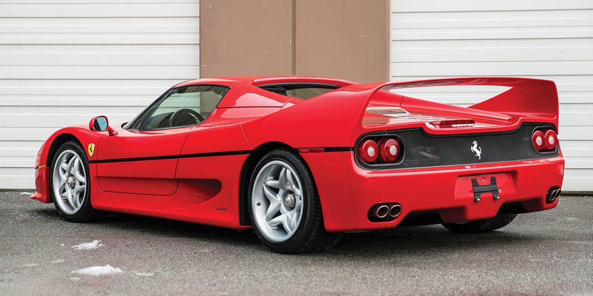
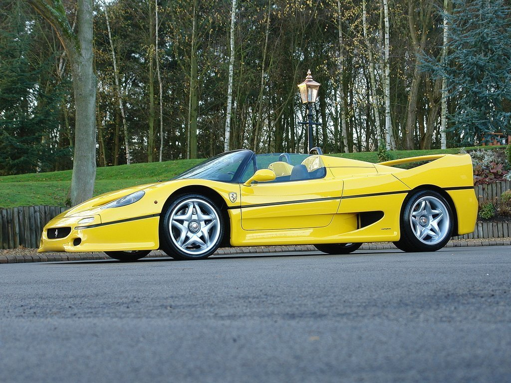
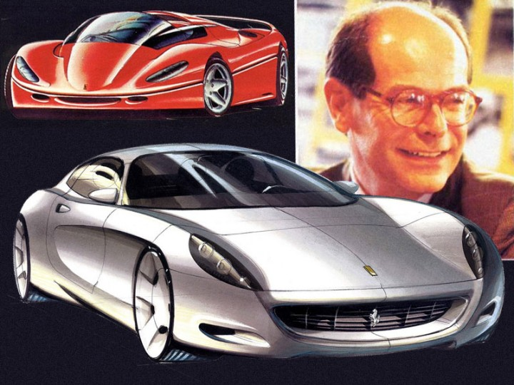

Only 349 cars were made, one fewer than Ferrari estimated they could sell.
This was, in the words of Ferrari spokesman Antonio Ghini, because "Ferraris are something cultural, a monument. They must be hard to find, so we will produce one less car than the market."

Color popularity:
Rosso Corsa (Red): 302
Giallo Modena (Yellow): 31
Rosso Barchetta (Dark red): 8
Argento Nurburgring (Silver): 4
Nero Daytona (Black): 4

Lorenzo Ramaciotti

As an anniversary special launched two years
before Ferrari's 50th, the 1995 F50 had it tough following Ferrari's 40th anniversary special, the immensely
popular and just as iconic F40 of 1987. Inspired by Alain Prost's 1990 Ferrari 641 and designed by Lorenzo
Ramaciotti and Pietro Camardella at Pininfarina.